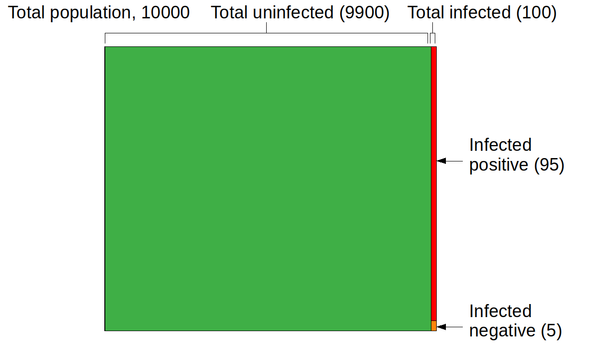

Why is covid-19 testing so unreliable? A pictorial view
 I guess that covid-19, and the coronavirus that causes it,
need no further introduction. After all, at the time of writing we're
living through the worst medical crisis -- in the western world, at least
-- in a century. As I write this, we're bracing ourselves for the winter
onslaught, and infections have already started to rise alarmingly.
I guess that covid-19, and the coronavirus that causes it,
need no further introduction. After all, at the time of writing we're
living through the worst medical crisis -- in the western world, at least
-- in a century. As I write this, we're bracing ourselves for the winter
onslaught, and infections have already started to rise alarmingly.
Here in the UK, our Government's main approach to managing the disease is a program of widespread infection testing, followed by contact tracing. It's worked pretty well elsewhere, and nobody wants to see another national lock-down -- not after the ruinous effects of the last one.
The problem is that testing for covid-19 infection is staggeringly unreliable. This lack of reliability stems from the high rate of false positives, and is usually explained mathematically. Although the math isn't hard to understand, this article illustrate the problem of false positives in pictures.
The problem of false positives
The effectiveness of a medical screening test is generally expressed in terms of its sensitivity and selectivity. A test is "sensitive" if a large proportion of people who are infected test positive; it is "selective" if a small proportion of people who are not infected test positive. These figures are usually expressed as proportions or percentages. An ideal test would provide 100% sensitivity and 100% selectivity -- everybody with the disease would test positive, and nobody without it would test positive.
The polymerase chain reaction (PCR) test widely used for public testing for the coronavirus in the UK has sensitivity and selectivity that are both around 95%. These are impressive figures, given the tiny amounts of virus protein they have to detect.
With a sensitivity of 95%, anybody who had a positive test would be justified in feeling worried. Such a person might even think there was a 95% probability he or she was infected.
In fact, at the levels of incidence of the infection encountered in the community at the time of writing, there is a much higher chance that the positive test is a false positive, than that the subject is actually infected.
I should point out that I'm talking about widespread, community testing, here -- not testing in hospitals or nursing homes. We expect that, with such a testing regime, a large number of people tested are not sick or, at least, not sick with covid-19.
The relative contribution to a positive test caused by a genuine infection, compared to a false positive, is easy to calculate mathematically. However, it's more compelling as a diagram.
A graphical view
The image below represents the infection status of a town with 10,000 inhabitants. I've picked this value to be a round number, not to represent any particular town -- the actual number isn't really important. At the time of writing, the total rate of infection is estimated to be about 1% in urban areas -- of course, it's higher in some places than others but 1% is, again, a round number. I'll consider later how the result below will change if that rate of disease prevalence is different.
Since the population is 10,000, with a 1% infection rate the total number of infected people will be 100 -- that's the red area in the graphic above.
The image isn't exactly to scale -- it's hard to draw a slice that is only 1% of the total area. Still, it's clear how many more uninfected people there are than infected people.
Now let's consider the covid-19 test, applied to the 100 people in the community who are, for certain, infected. Because the sensitivity is 95%, the number of infected people who test positive is 95 -- that's the new red area in the graphic below. The number of infected people who test negative is 5 -- the orange area. That's an important figure in its own right, but not one I plan to consider further here.

Now let's consider people who are actually not infected. There are -- assuming we test everybody -- 9900 of those people. That's the green area above. The selectivity is 95%, so the rate of false positives is 5%. The actual number of false positives is 5% of 9900, or 495. The graphic below shows the final results for the four sections into which the population is divided: people with the disease who test positive (95), those with the disease who test negative (5), those who are healthy and test negative (9405), and the healthy who test positive (495).
So far as the efficacy of testing is concerned, the relevant parts of the diagram are the red and the blue regions. These represent people who had a positive covid-19 test -- either because they're infected (95 people), or because they had a false positive result (495 people). I hope the significance of these two figures is clear: the uninfected group of positive-testers is hugely larger than the infected group. Why? Because the uninfected population is hugely larger than the infected population.
The total number people who tested positive is 95 + 495 = 590. So the percentage of people whom the test correctly identifies as infected is 95 / 590 = 16%.
What !?
There's an enormous disparity between the high sensitivity and selectivity of the PCR test for covid-19 -- and the poor ability of the test to identify people who are genuinely infected. The reason for this is that even the comparatively high selectivity rate of 95% does not prevent false positives swamping real positives, when the overall incidence of disease is low. The UK medical authorities -- and medical authorities everywhere -- are keen to talk up the effectiveness of testing but, in my example, 495 people in a community of 10000 were wrongly identified as being ill. If we made a rough guess that, on average, each of those people lives in a household of three people, that's 1,485 people in quarantine for 14 days.
Let me just say that in a different way: nearly 15% of the population in quarantine, when only 1% are infected.
It's reasonable to ask under what conditions widespread testing would be efficacious. One measure is the point at which a positive result is as likely to indicate a genuine infection than a false positive. Looking at the graph below, that point appears to correspond to an overall infection incidence in the community of about 5% (assuming specificity and selectivity both 95%).
Putting this bluntly, until overall incidence reaches the shockingly high level of 5%, you've got less than a coin-tossing chance of being infected if you test positive.
Hmmm....
So what should we make of this?
Throughout this article I've assumed that the Government's "test, test, test" strategy implies to widespread community testing -- of people who are healthy as well as those who appear to be ill. The Government seems to have wavered in this commitment, and has recently started to hint that only people with symptoms should be tested. It's probably fair to say that the chance of your positive test indicating a genuine infection is increased if you actually have symptoms of covid-19; but it's not clear how much it is increased.
More to the point, perhaps -- if you have obvious symptoms of covid-19, perhaps you don't even need to be tested, To be sure, your symptoms might come from something else entirely -- but perhaps the people who need to be tested are the ones you've been in contact with, and who don't have symptoms. Even then, the rate of false negatives is likely to be disruptively high.
In short, unless the selectivity of covid-19 testing can be improved radically, it would be a mistake to rely on widespread testing of asymptomatic individuals to give us more information than tossing a coin.